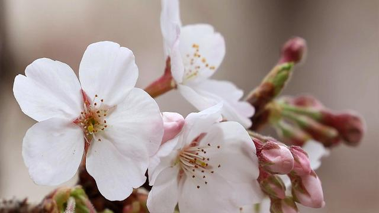

벚꽃찌개가 있다면 어떤 모양일까요
찌개라고 하면 뭔가
빨갛고
보글보글 끓고
먼가 얼큰한
그런 느낌이 생각나는데요
like
김치찌개
부대찌개
etc
된장찌개는 빨갛진 않지만.
또 무슨 찌개가 있죠
벚꽃찌개가 있습니다.
오늘은 벚꽃찌개 레시피를 알려드리겠습니다.
벚꽃찌개 레시피
벚꽃찌개 맛있게 끓이는 법
벚꽃찌개 칼로리
계랑 기준
1T (큰술) = 15ml / 1t (작은술) = 5ml
1컵 = 180ml
재료 준비(2~3인분)
- 벚꽃 300g
- 절인 벚꽃 160g
- 양파 4개
- 대파 1대
- 청양고추 1개
- 두부 1/2모
- 물 500ml-600ml
- 참치액 1T
- 다진 마늘 5T
- 설탕 3T
1. 재료준비

벚꽃찌개 레시피 재료 준비해 볼게요
벚꽃찌개의 핵심 재료는 아무래도
벚꽃잎이겠죠~
찌개에 쓰는 벚꽃은 암술과 수술을 모두 제거해야 해요
기호에 따라 꽃 받침은 넣어도되고 빼셔도 된답니다
저는 개인적으로 꽃 받침의 아삭거리는 식감을 좋아해서 꼭 넣는 편이에요
요즘은 벚꽃도 하우스에서 키워서 꼭 봄철이 아니더라도 벚꽃을 구할 수 있더라구요
벚꽃을 말려서 보관하시면 벚꽃찌개의 향이 살아나지 않으니
찌개에 사용할 벚꽃은 반드시 갓 따오거나 냉장보관해주세요!
2-3인분 기준이고요
벚꽃은 약 300g 정도 준비하면 됩니다
에
여기까지만 쓸게요~^^
요즘 아침, 저녁으로 날씨가 많이 쌀쌀해졌더라구요
낮엔 덥긴 하지만~
일교차가 큰 만큼 건강 관리 잘해야겠어요
따끈하고 쌉쪼롬한 벚꽃찌개로
든든한 한 끼 밥상 차려 드시고 건강 지키셔요!
혹시나 벚꽃찌개에 도전해보신 이웃님들은 후기 꼬옥 남겨주세요!